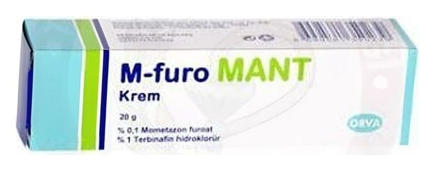

M-Furo Mant % 0.1 + % 1 Krem, 20 g

Ne için kullanılır
KT · Bölüm 1M-furo MANT; beyaz, pürüzsüz krem olup, 20 g krem içeren plastik kapaklı alüminyum tüplerde bulunmaktadır. M-furo MANT; derinin yüzeysel mantar hastalıklarının tedavisinde etkili olan terbinafin hidroklorür ile, derinin iltihabi ve alerjik durumlarında görülen iltihap, kaşıntı, yanma, sızı Bu ilacı kullanmaya başlamadan önce bu KULLANMA TALİMATINI dikkatlice okuyunuz, çünkü sizin için önemli bilgiler içermektedir.
Bu kullanma talimatını saklayınız. Daha sonra tekrar okumaya ihtiyaç duyabilirsiniz. Eğer ilave sorularınız olursa, lütfen doktorunuza veya eczacınıza danışınız. Bu ilaç kişisel olarak sizin için reçete edilmiştir, başkalarına vermeyiniz. Bu ilacın kullanımı sırasında, doktora veya hastaneye gittiğinizde doktorunuza bu ilacı kullandığınızı söyleyiniz. Bu talimatta yazanlara aynen uyunuz. İlaç hakkında size önerilen dozun dışında yüksek veya düşük doz kullanmayınız.
Sayfa 2 /9
gibi şikayetleri giderici özellikteki güçlü bir kortikosteroid olan mometazon furoatı birlikte içerir. M-furo MANT; egzamalarla birlikte seyreden (örneğin eller, ayaklar, kasık, parmak araları) mantar enfeksiyonlarının tedavisinde kullanılır.